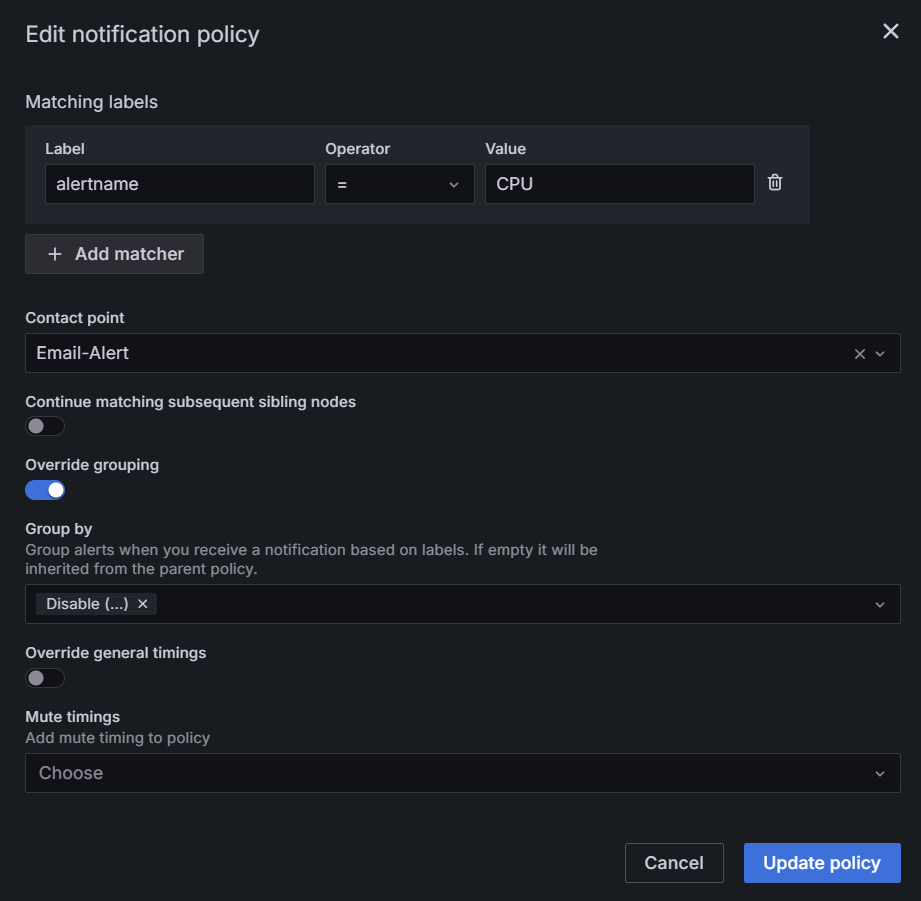

Для наблюдения за ключевыми показателями работы системы установите инструмент Grafana. После этого вы можете настроить получение оповещений на электронную почту или в мессенджер. Это поможет своевременно реагировать на возникающие ошибки и принимать меры по их устранению.
Настроить оповещения с помощью Grafana можно несколькими способами:
- создать правила оповещений вручную и настроить их отправку на электронную почту или мессенджер;
- использовать готовый список правил и настроить отправку оповещений в мессенджер.
Создать правила оповещений и настроить их маршрутизацию
Настройка оповещений в Grafana состоит из нескольких этапов:
- Настроить способ получения оповещений.
- Создать правила оповещения.
- Настроить маршрутизацию оповещений.
Шаг 1: Настроить способ получения оповещений
В настройках Grafana перейдите в раздел Alerting > Contact points и в поле Integration укажите способ получения уведомлений, а затем заполните соответствующие поля.
Чтобы получать уведомления через электронную почту, выберите опцию Email. Затем в появившемся поле Addresses укажите список электронных адресов, на которые будут отправляться оповещения.
Для получения уведомлений через Telegram в поле Integration выберите соответствующий способ. После этого появятся поля BOT API Token и Chat ID. Чтобы их заполнить, выполните следующие действия:
- Перейдите в Telegram и создайте бота.
- Скопируйте токен бота и введите его в поле BOT API Token.
- Создайте группу в Telegram и добавьте в неё вашего бота.
- Получите ID группы и укажите его в поле Chat ID.
Для выполнения действий в Telegram используйте официальную документацию.

Шаг 2: Создать правила оповещения
На основе метрик с использованием Prometheus или отслеживании логов с помощью Loki вы можете создать правила оповещения.
Для примера создадим правило оповещения по метрикам с использованием дэшборда ELMA365-Overview и настроим уведомления при нагрузке на ноде CPU более 80% длительностью 5 минут. Для этого в дэшборде откройте нужный раздел, в нашем случае — Nodes info. Затем в правом верхнем углу нажмите на три точки и выберите пункт More > New alert rule. В открывшемся окне выполните следующие действия:
- В поле Name введите название правила оповещения, например, CPU Usage. Во втором пункте автоматически отобразится скрипт правила. В конце текста этого скрипта установите пороговое значение для срабатывания правила на уровень > 0.8.
- Далее в этом же окне создайте новую группу оценки со значением 5m (пять минут), а также задайте название для неё. Тогда оповещение поступит, если нагрузка на CPU превышает 80% на протяжении всего указанного времени.

- Затем в этом же окне в поле Folder выберите папку, в которой будут сохраняться и отображаться уведомления по созданному правилу. В поле Evaluation group добавьте ранее созданную группу оценки 5m.
Дополнительно в окне New alert rule можно добавить лейблы и аннотации для вашего правила оповещения. Лейблы помогут вам классифицировать и фильтровать оповещения, а аннотации позволят добавить описание проблемы или действий, которые следует предпринять.

Шаг 3: Настроить маршрутизацию оповещений
Перейдите в раздел Alerting – Notification policies и в открывшемся окне:
- заполните пункт Matching labels;
- в поле Contact point выберите способ получения уведомлений.
Образец заполнения:

Маршрутизация настроена. Если пороговое значение будет превышать коэффициент 0.8 в течение 5 минут, то поступит уведомление на указанный электронный адрес.
Применить готовый список правил для оповещений в мессенджеры
В чарте elma365/monitoring расположен список правил для оповещений, заданный в файле alerting.yaml. Его можно применить только для отправки уведомлений в мессенджеры.
По умолчанию в конфигурации файла указаны параметры для маршрутизации сообщений в наиболее распространённый сервис Telegram.
Чтобы использовать готовый список с другим мессенджером, вы можете изменить конфигурацию в файле alerting.yaml, задать в нём маршрутизацию оповещений и шаблоны для необходимого мессенджера.
Если готового списка правил в файле alerting.yaml недостаточно, вы можете создать правила вручную и настроить их маршрутизацию по инструкции, приведённой выше.
Рассмотрим, как использовать готовый список правил и отправлять оповещения в Telegram:
- Перед настройкой проверьте, что у вас установлены средства мониторинга и DBSExporter для наблюдения за базами данных с включённым Node Exporter.
- Чтобы установить готовый список правил оповещений через интернет, получите конфигурационный файл
values-monitoring.yaml, выполнив команду:
helm repo add elma365 https://charts.elma365.tech
helm repo update
helm pull elma365/monitoring --untar
- В файле
alerting.yamlнастройте канал оповещения. Для этого укажите в строке:
- bottoken: <bot-token> — токен Telegram-бота;
- chatid: "<chat-id>" — идентификатор чата в Telegram.
# Настройки alerting
kube-prometheus-stack:
grafana:
alerting:
contactpoints.yaml:
apiVersion: 1
contactPoints:
- orgId: 1
name: telegram-message-node
receivers:
- uid: telegram-message-node
type: telegram
settings:
bottoken: <bot-token>
chatid: "<chat-id>"
message: '{{ "{{" }} template "telegram.node" . {{ "}}" }}'
parse_mode: HTML
disableResolveMessage: false
- Примените готовый список оповещений из файла
alerting.yaml, выполнив команду:
helm upgrade --install elma365-monitoring elma365/monitoring -f values-monitoring.yaml -f alerting.yaml -n monitoring --create-namespace
Оповещения в Telegram могут выглядеть следующим образом: